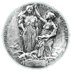
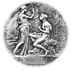
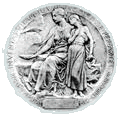

A Nobel-díjat a svéd kémikus és feltaláló Alfred Nobel alapította. Nobel 1895. november 27-én kelt végrendeletében rendelkezett úgy, hogy vagyonának kamataiból évről évre részesedjenek a fizika, kémia, fiziológia és orvostudomány, továbbá az irodalom legjobbjai és az a személy, aki a békéért tett erőfeszítéseivel a díjat – és a vele járó, 2011-ben a kilencmillió svéd koronát (körülbelül 330 millió forintot, vagy 0,84 millió eurót) – kiérdemli.
1968-ban a tudományos munkásság nobeli elismerése kiegészül a Közgazdasági Nobel-emlékdíjjal. Ezt a Svéd Bank (svédül Sveriges Riksbank) kezdeményezte a pénzintézet fennállásának 300. évében, s a díjat hivatalosan Alfred Nobel-Emlékdíjnak nevezik, nem közgazdasági Nobel-díjnak.
Nobel nem egy-egy tudományos pálya vagy életmű elismerésére szánta a díjat: végrendelete értelmében konkrét teljesítményért, eredményért adható az érem – amit a díj odaítélésének indoklásában mindig le is írnak. Nobel-díjat a jelölt csak életében kaphat, így a tudományos élet és az irodalom jelesei közül számos személy végül nem érhette meg, hogy rá kerüljön a sor, holott munkássága érdemessé tette volna az elismerésre. A Nobel-békedíj az egyetlen, amit nem természetes személy is megkaphat: nem is egy példa volt arra, hogy szervezetek kapták a békedíjat. A tudományok és az irodalom díjazottjai azonban csak magánszemélyek lehetnek. A Nobel-díjakat a Svéd Királyi Tudományos Akadémia ítéli oda, az egyetlen kivétel a Nobel-békedíj. A Nobel-békedíjat odaítélő bizottságot Nobel végakarata szerint a norvég parlament (Storting) választja a soraiból.
Alfred Nobel 1833. október 21-én született Stockholmban. Apja és fivérei az ipar és a kereskedelem különböző ágaiban tevékenykedtek, jelentős szerepük volt az oroszországi olajlelőhelyek kiaknázásában. Alfred Nobel kivételesen tehetséges volt, és több jelentős találmány is fűződik nevéhez. Ezek legfontosabbika a dinamit volt, melyet "véletlenül", de jó megfigyelés alapján fedezett fel. A nitroglicerint, ezt a rendkívül nagy hatású robbanószert 1843-ban fedezte fel az olasz Sobrero. Alkalmazását azonban akadályozta veszélyessége: már kis mechanikai hatásra, ütésre is robban, ami sok katasztrófát okozott. Nobel megfigyelte, hogy a véletlenül kiömlött niroglicerint az ott lévő kovaföld fölitta, és az így képződő, jól kezelhető anyag ütésre nem érzékeny, tehát biztonságosan szállítható, de gyutaccsal ugyanúgy robban, mint a nitroglicerin. A dinamitot széleskörűen alkalmazták az ipari robbantásokra, de katonai célokra csak elenyésző mértékben használták. Nobelt tehát nem valamiféle lelkifurdalás, hanem eredendő filantrópiája vezette a világbéke előmozdításának gondolatához.
Mivel a díjat a vagyon évi hozadéka, illetve a kamatok teszik, a díj összege évről évre változik. 1995-ben a díj összege meghaladta az egymillió dollárt. Mindegyik díjazott kap egy kb. 200 g súlyú, 23 karátos aranyból készült érmet. (Érdekes, hogy az érem vastagsága, és így tömege is változhat kissé. Szent-Györgyi Albert érmének tömege 206 g.) A három tudományos és az irodalmi díjjal együtt adományozott érmet Erik Lindberg, a századforduló jelentős svéd szobrásza tervezte. A 64 mm átmérőjű érmek előlapja azonos: Nobel profilban ábrázolt arc-, illetve mellképe. Az érmek hátoldala különböző. Az érmeket a svéd Királyi Pénzverde készíti.
A fizikai és a kémiai érem hátoldala
Az irodalmi érem hátoldala
Az élettani, illetve orvos-tudományi érem hátoldala
Forrás: Wikipédia